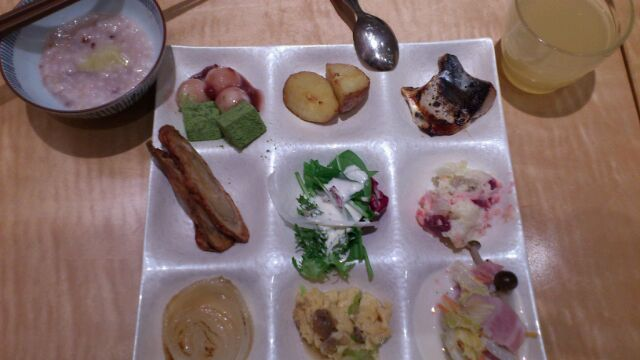

川村真洋
OFFICIAL BLOG
2012/03
02
Fri
川村真洋
滋賀県
ほいっ♪
ろってぃ-です(⌒‐⌒)
滋賀県に行った日は
全部の食材が野菜のお店に
行きましたω
バイキングです。

まひろのチョイスど-ですか(*^^*)？
最近はダイエットしてまして...
朝ごはん普段に食べて
昼 抜く。
で、17時ごろにサラダ食べる^^
そっから何も食べない。
真似しない方がいいですよっ>ω<!!!
あっ で 話もどして^^
滋賀県に行った日は
まいやん♪と一緒に
寝ました(*^^*)
以上っ♪ろってぃーでした^ω^のし
コメント(61)
2012/03/02 17:06
« 大阪の夜★ まひろ
｜
TOP
｜
富山♪♪ »
PAGE TOP ▲